Splines
A spline in planex2d is one edge: a smooth curve through the given points, not a chain of short lines. Internally, planex2d cuts only lines and arcs. Boolean operations, offsets and areas therefore work on an arc approximation of the spline, which stays within px.config.spline_tol of the curve, relative to the size of the spline’s bounding box (1e-6 by default). To the user, the spline remains one edge, and the export passes the curve itself to OpenCASCADE as a B-spline. See
Tolerances for details.
[1]:
import math
import numpy as np
import planex as px
In Boolean operations
px.FromNACA creates an airfoil from its formula, with each side as one spline. The example cuts off a flap at 75 % chord with a box (Figure 1b, c). Both pieces are cut from the same approximation, so together they make up the airfoil (Figure 1a) up to rounding.
[3]:
foil = px.FromNACA("0012", chord=100)
box = px.QuickSketch((75, -20)).Rectangle(30, 40).Face()
flap = foil * box
main = foil - box
print("foil edges:", [type(e.edge).__name__ for e in foil.edges])
foil edges: ['SplineEdge', 'SplineEdge']
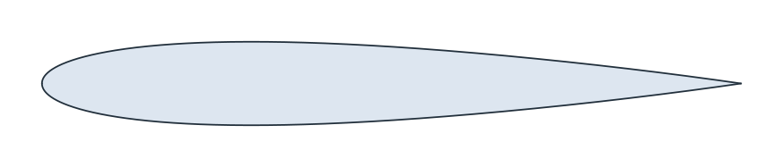
(a) NACA 0012, chord 100
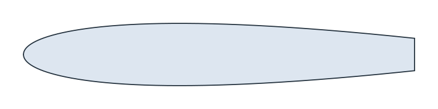
(b) foil - box
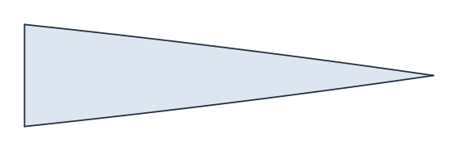
(c) foil * box
[5]:
print("main + flap - foil:", main.mass + flap.mass - foil.mass)
main + flap - foil: -1.1368683772161603e-13
Two styles: planex2d and OpenCASCADE
A cubic spline through given points is not unique, so the result depends on the interpolation method. style="px", the default, is the planex2d interpolation. style="occ" is OpenCASCADE’s Geom2dAPI_Interpolate, called exactly as netgen calls it, for curves that must match netgen’s. px.config.spline_style sets the default.
The example is the wall of a nozzle through six stations (x, r). Both curves pass through every station, but they differ between them. On this wall, the planex2d curve swings further up between the last two stations.
[6]:
stations = np.array([(0, 30), (10, 30), (25, 22), (30, 16), (50, 12), (80, 12)])
planex_wall = px.Spline(stations)
occ_wall = px.Spline(stations, style="occ")
print("px through the stations:", planex_wall.Distance(stations).max())
print("occ through the stations:", occ_wall.Distance(stations).max())
print("largest distance between the curves:", planex_wall.Hausdorff(occ_wall))
def highest_after(wire, x):
points = wire.Polylines(1e-4)[0]
return points[points[:, 0] > x, 1].max()
print("highest r after x = 50, px:", highest_after(planex_wall, 50))
print("highest r after x = 50, occ:", highest_after(occ_wall, 50))
px through the stations: 0.0
occ through the stations: 0.0
largest distance between the curves: 1.6393923969752375
highest r after x = 50, px: 15.189462850117458
highest r after x = 50, occ: 13.57268737989598
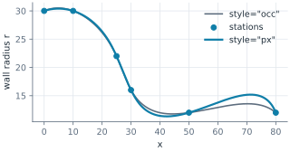
Tangents
A nozzle wall usually has to start and end straight. tangents={index: (dh, dv)} sets the direction at chosen points, where index 0 is the first point. With horizontal ends, the swing disappears (Figure 3b). Only the direction of the vector counts, not its length.
[8]:
smooth = px.Spline(stations, tangents={0: (1, 0), 5: (1, 0)})
longer = px.Spline(stations, tangents={0: (10, 0), 5: (10, 0)})
print("tangent at the start", smooth.edges[0].TangentAt(0), "at the end", smooth.edges[-1].TangentAt(1))
print("difference with longer vectors:", smooth.Hausdorff(longer))
print("highest r after x = 50:", highest_after(smooth, 50))
tangent at the start Vertex((1.0, 0.0)) at the end Vertex((1.0, -2.8421508709179182e-14))
difference with longer vectors: 1.1368683772161603e-13
highest r after x = 50: 12.493265255761411
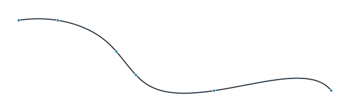
(a) No tangents
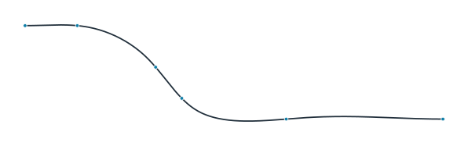
(b) Tangents (1, 0) at both ends
Closed splines
periodic=True closes the spline back to its first point. The planex2d closed spline is the periodic cubic spline: it is smooth everywhere, and it is the same curve whichever point the list starts with. OpenCASCADE’s closed spline depends on where the list starts.
The example is a cam with a base radius of 15 and a lift of 15, given by ten points of r = R + h ((1 + cos a) / 2)⁴. The list is started once at point 0 and once at point 3. Figure 4 shows the planex2d curve (a) and the OpenCASCADE curve (b), with the second start dashed.
[10]:
a = np.radians(np.arange(0, 360, 36))
r = 15 + 15 * ((1 + np.cos(a)) / 2) ** 4
cam = np.column_stack([r * np.cos(a), r * np.sin(a)])
moved = np.roll(cam, -3, axis=0)
for style in ("px", "occ"):
first = px.Spline(cam, periodic=True, style=style)
other = px.Spline(moved, periodic=True, style=style)
print(style, "started at point 0 or 3, apart by", first.Hausdorff(other))
px started at point 0 or 3, apart by 1.7763568394002505e-14
occ started at point 0 or 3, apart by 0.7543683624609436
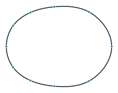
(a) planex2d: the same from either start
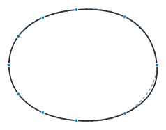
(b) OpenCASCADE: started at point 0 and 3
Offsets
Offset(d) grows a face by d along its boundary, in place. inplace=False returns the grown face and keeps the original, which is needed here because both are used. Figure 5 shows the NACA 0012 with a coating 0.5 thick. The outline of the coating keeps its distance from the spline everywhere. The coated area follows Steiner’s formula for a convex region, A + L·d + π·d², from the airfoil’s area A and its perimeter L.
[12]:
t = 0.5
coated = foil.Offset(t, inplace=False)
coating = coated - foil
outline = coated.Polylines(1e-3)[0]
gaps = foil.Distance(outline)
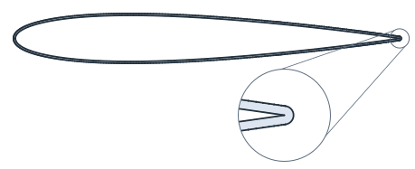
[14]:
steiner = foil.mass + foil.outer.mass * t + math.pi * t**2
print(f"outline from the airfoil: {gaps.min():.9f} to {gaps.max():.9f}")
print(f"coated area {coated.mass:.9f}, Steiner {steiner:.9f}")
outline from the airfoil: 0.500000000 to 0.500000000
coated area 919.822154250, Steiner 919.822154250
Points when they are needed
A toolpath, a plot or another program may need points. Sample(tol) returns the points of one edge, and Polylines(tol) those of every loop of a wire, face or shape, with chords that follow the curve to about tol. Below the tolerance of the arc approximation, the chords follow the approximation instead of the exact curve. For this cam, that tolerance is about 6e-5, which shows in the last line of the output.
Figure 6 shows the closed spline of the cam as points (a) and as a polygon (b).
[15]:
cam_curve = px.Spline(cam, periodic=True)
cam_face = px.Face([cam_curve])
counts = {}
for tol in (1e-1, 1e-2, 1e-3, 1e-4, 1e-5):
loop = cam_face.Polylines(tol)[0]
chords = cam_curve.Distance((loop[1:] + loop[:-1]) / 2).max()
counts[tol] = len(loop)
print(f"tol {tol:.0e}: {len(loop)} points, chord middles up to {chords:.1e} from the curve")
tol 1e-01: 209 points, chord middles up to 1.1e-02 from the curve
tol 1e-02: 213 points, chord middles up to 8.6e-03 from the curve
tol 1e-03: 421 points, chord middles up to 9.9e-04 from the curve
tol 1e-04: 1493 points, chord middles up to 1.1e-04 from the curve
tol 1e-05: 4507 points, chord middles up to 6.1e-05 from the curve
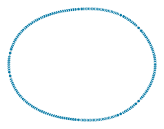
(a) Polylines(0.1)
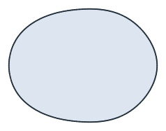
(b) The polygon
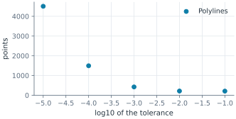
B-spline data
Curves from CAD data are read exactly: the poles, the full knot vector, the degree and, for rational curves, the weights. The example is the unit circle as a rational B-spline of degree 2 with nine poles on a square. The poles are marked, and their polygon is dashed.
[17]:
w = math.sqrt(0.5)
poles = [(1, 0), (1, 1), (0, 1), (-1, 1), (-1, 0), (-1, -1), (0, -1), (1, -1), (1, 0)]
knots = [0, 0, 0, 0.25, 0.25, 0.5, 0.5, 0.75, 0.75, 1, 1, 1]
weights = [1, w, 1, w, 1, w, 1, w, 1]
circle = px.BSpline(poles, knots, degree=2, weights=weights)
disc = px.Face([circle])
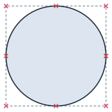
The area in planex2d comes from the arc approximation, while the exported face carries the exact curve:
[19]:
print("planex2d area - π:", disc.mass - math.pi)
print("OCC area - π:", disc.ToOCCFace().mass - math.pi)
planex2d area - π: 0.0
OCC area - π: 4.440892098500626e-16
A closed spline is currently stored as two edges, split at a point of the curve, and each edge is one spline. The output shows their number and the data of the first:
[20]:
print(len(circle.edges), "edges; the first:", circle.edges[0].edge.bspline)
2 edges; the first: {'poles': [(1.0, 0.0), (1.0, 1.0), (0.0, 1.0), (-1.0, 1.0), (-1.0, 0.0)], 'knots': [0.0, 0.0, 0.0, 0.25, 0.25, 0.5, 0.5, 0.5], 'degree': 2, 'weights': [1.0, 0.7071067811865476, 1.0, 0.7071067811865476, 1.0]}
To OpenCASCADE
ToOCCShape() passes a spline to OpenCASCADE as a B-spline curve of degree 3. The check samples points along the OpenCASCADE edges and measures their distance from the planex2d boundary. That boundary is the arc approximation, so the distance stays within its tolerance, about 1e-4 for an airfoil with a chord of 100.
[21]:
occ = foil.ToOCCShape()
worst = 0.0
for e in occ.edges:
t0, t1 = e.parameter_interval
points = np.array([(q.x, q.y) for q in (e.Value(t) for t in np.linspace(t0, t1, 1001))])
worst = max(worst, foil.outer.Distance(points).max())
print(f"{len(occ.edges)} OCC edges, at most {worst:.1e} from the planex2d boundary")
2 OCC edges, at most 9.6e-05 from the planex2d boundary